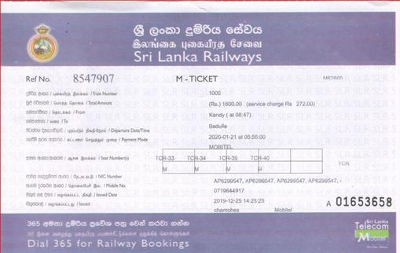
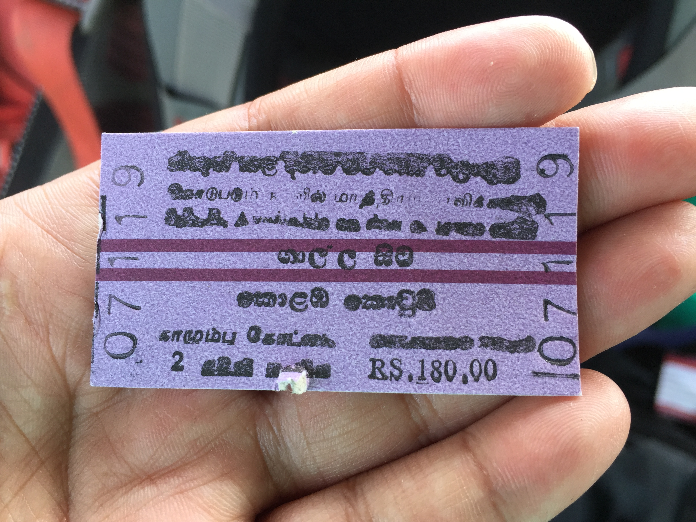
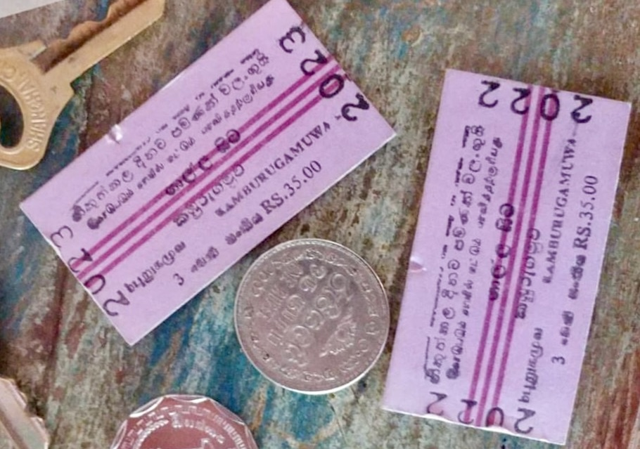

First Class
Fist Class ticket is the top tire level in Sri Lanka Railways.Its expensive compare to other 2 classes, yet offers better facilities such as air conditioned compartments with adjustable, comfortable seats. First class ticket could be booked online through Sri lanka Railways online seat reservation facility and required to printed prior boarding the train. Vist seat reservation webpage to reserve your ticket
Second Class
Second class ticket is the middle tire ticket. Most of the trains do not offer seat booking facility for this class of tickets, however most long distancing trains on Main line, Northern line and Batticolo line offers second class tickets to be reserved through online at SLR seat reservation webpage or at the ticket counter!
Third Class
This is the most cost-effective ticket. cheapest options but has its limitancies. Usually cannot be reserved online.